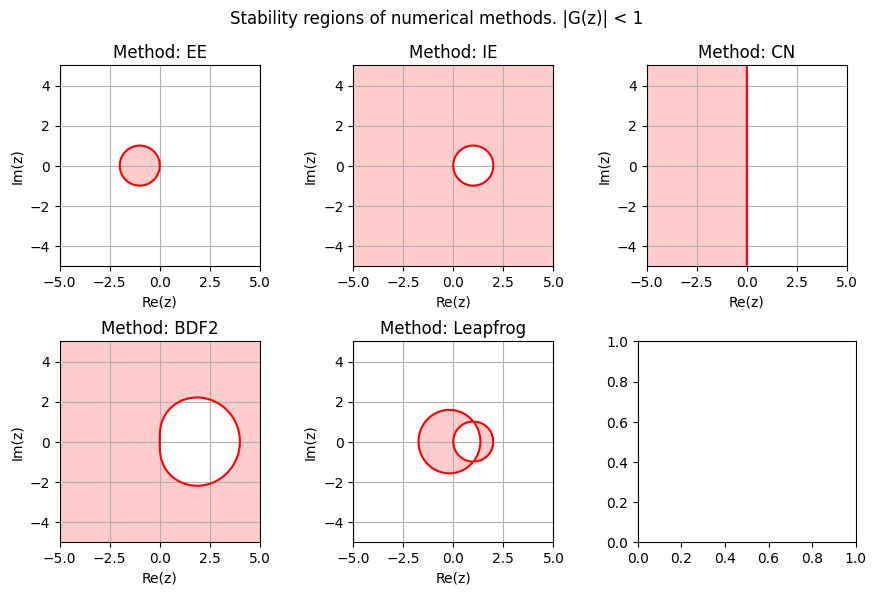
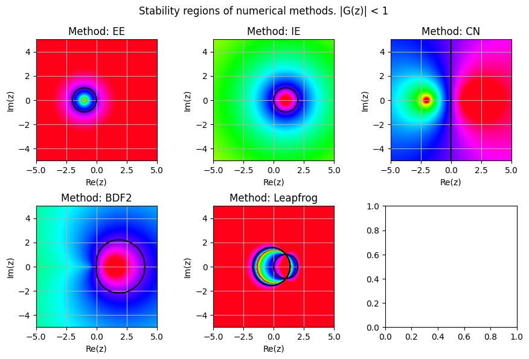
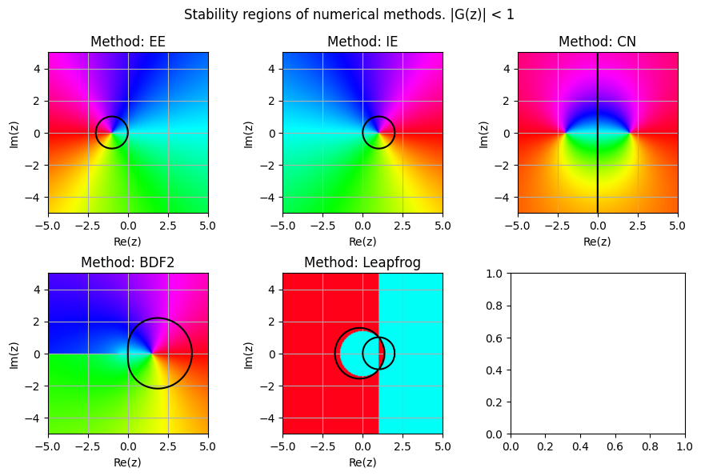
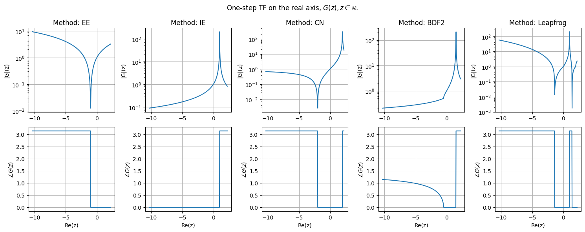
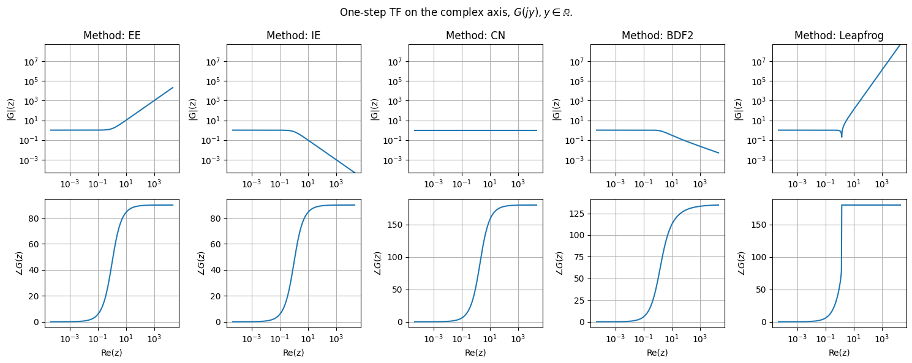

27. Integration schemes#
The choice of a integration scheme usually involves a trade-off between, stability, computational cost, fidelity (accuracy/order, numerical damping/change of phase/amplifications of fast modes - see transfer function, and stiff problems -, energy conservation for conservative systems - see simplectic methods,…)
Link to Z-transform for discrete-time signals.
27.1. Contents#
Contents
Schemes.
Euler methods, CN
RK
Multi-step: AB, AM, BDF,…
Other methods:
Newmark-beta, Verlet (Leapfrog),…
Concepts.
Convergence:
Consistence:
Stability:
zero-stability
A-stability
L-stability
Stiffness
Theoretical results
Dahlquist barriers
Lax-Richtmyer
References
Advantage of L-stability compared to A-stability, Mathematics Stack Exchange.
27.2. Families of integration methods#
Linear multi-steps:
from Lagrange approximation of integral: AB (explicit, \(s\)-step with max order \(s\)), AM (implicit, \(s\)-step with max order \(s+1\))
from approximation of derivative: BDF (implicit)
27.3. Concepts#
27.3.1. Local truncation error and Consistency#
Let
the numerical method for the solution of the initial value problem
The local truncation error is the error produced by one step of the method, i.e.
being \(y_{n+k}\) the result of one step of the numerical method, and \(y(t_{n+k})\) the exact solution using the same initial conditions (assuming, there’s no error in previous steps). A numerical method is defined consistent if
The method has order \(p\) if
27.3.2. Global truncation error and Convergence#
The global truncation error \(e_n\) is the accumulation of the error up to time \(t_n\),
A numerical method is defined convergent if
27.3.3. Stability of a linear system#
Linear homogeneous equation (or system?)
is a first test for the stability of a numerical method. The problem has the exact solution
and is asymptotically stable if \(\text{re}\{\lambda\} < 0\), as
Forced linear equation (or system?)
The exact solution converges to the forced solution if the system is asymptotically stable, For periodic forcing, the behavior can be evaluated in frequency (Laplace or Fourier) domain
27.3.3.1. A-stability#
A-stability ensures the numerical method doesn’t explode in the simulation of a asymptotically stable system.
A numerical method is defined A-stable if its stability region includes the whole left half plane.
27.3.3.2. L-stability#
Let \(z := h \lambda\). For one-step methods, it’s possible to define a scalar transfer function \(G(z)\) between \(y_{n}\) and \(y_{n+1}\),
For multi-step methods… proerties of characteristic polynomial and its roots
For systems… amplification matrix…
L-stability ensures that the method damps extremely fast - stiff - modes, that are usually physically irrelevant but that can be numerically troublesome. A method is defined L-stable if
27.3.3.3. 0-stability#
0-stability (of a numerical method for a certain differential equation on a given interval) if a perturbation in the starting value of size \(\varepsilon\) causes the numerical solution over the time interval to change less than \(K \varepsilon\) for some \(K\) that doesn’t depend on the time-step \(h\).
It’s enough to check the conditions for the differential equation \(y' = 0\) todo why? check it!
A linear multi-step method is zero-stable iif the root condition (analogous to at least marginally stable system, i.e. roots with absolute value \(|z| < 1\), or \(|z| = 1\) with multiplicity \(= 1\)) is satisfied.
27.3.4. Some schemes#
27.3.4.1. Homogeneous equation#
Explicit Euler.
The solution of this difference equation with initial condition \(y_0\) reads
Implicit Euler.
The solution of this difference equation with initial condition \(y_0\) reads
Crank-Nicolson.
BDF 2. BDF 2 is a multi-step approach, so either \(Z\)-transform of the conversion to a one-step 2-dimensional system is required to discuss its stability properties, and transfer function.
Z-transform. Using the definition \(\zeta := \lambda h\), and applying the \(Z\)-transform,
the characteristic polynomial reads
The roots of the polynomial depend on \(z \in \mathbb{C}\), and the system is stable if all the roots have \(|\zeta_k| \le 1\). This condition can be summarized with the condition of spectral radius of the matrix \(\mathbf{A}\) of the one-step system, \(\rho(\mathbf{A}) = \max |\lambda_k| < 1\).
Reduction of difference equation to a one-step system. The 2-step difference equation above
can be recast as a system, \(y_n = z_{1,n}\), \(y_{n-1} = z_{0,n}\)
or using matrix formalism
with \(\mathbf{A} = \begin{bmatrix} \cdot & 1 \\ -\frac{1}{3 - 2 z} & \frac{4}{3 - 2 z} \end{bmatrix}\). The eigenvalues of the system follows from the condition
i.e. the same condition as \(\pi(\zeta; z) = 0\).
L-stability. As \(\rightarrow +\infty\), the polynomials goes to \(\pi(z \rightarrow + \infty; \zeta) \sim - \frac{2}{3} z \zeta^2\) and thus the roots goes to \(z \rightarrow + \infty\).
Methods for second-order equations.
or as a first-order system
A test second-order homogeneous equation may be the dynamical equation of an undapmed mass-spring system,
being \(( d_t + i \Omega )( d_t - i \Omega ) x = 0\). This analysis can be performed with a system with conjugate complex eigenvalues \(\lambda = \sigma + j \omega\) and \(\lambda^* = \sigma - j \omega\), sot that the test equation becomes
Leapfrog method.
Verlet method. …
Newmark method. …
Test equation has \(f(x) = - \Omega^2 x\), so that Leapfrog method applied to the test problem reads
so that the \(\mathbf{z}_{i+1}\) state can be written as a function of the \(\mathbf{z}_i\) state
or
Generalized test equation has \(f(x,v) = 2 \sigma v - ( \sigma^2 + \omega^2) x = - 2 \xi \Omega v - \Omega^2 x\), with
Leapfrog method applied to the test problem reads
todo check!
if \(\xi^2 \ge 1\), then the eigenvalues are real
if \(\xi^2 \le 1\), then the eigenvalues are conjugate complex, \(s_{1,2} = -\xi \Omega \mp j \Omega \sqrt{1 - \xi^2}\)
27.3.4.2. Forced equation#
Explicit Euler.
…
Implicit Euler.
…
Crank-Nicolson.
…
27.3.4.3. A-stability#
import numpy as np
import matplotlib.pyplot as plt
ampl_fun_ee = lambda z: 1 + z
ampl_fun_ie = lambda z: 1 / ( 1 - z )
ampl_fun_cn = lambda z: ( 1 + z/2 ) / ( 1 - z/2 )
A_bdf2 = lambda z: np.array([[.0, 1.], [-1/(3-2*z), 4/(3-2*z)]])
def ampl_A_fun(z, A_fun):
evals = np.linalg.eigvals(A_fun(z))
ieval = np.argmax(np.abs(evals))
return evals[ieval]
def A_lf(z):
sig, om = np.real(z), np.imag(z)
Om = np.sqrt( sig**2 + om**2 )
if Om == 0:
return np.eye(2)
xi = - sig / Om
n1 = 1 - Om**2 / 2
d1 = 1 + xi * Om
return np.array([[n1, 1], [-Om**2/d1*n1, (1-xi*Om)/d1*n1]])
ampl_fun_bdf2 = lambda z: ampl_A_fun(z, A_bdf2)
ampl_fun_lf = lambda z: ampl_A_fun(z, A_lf)
ampl_funs = {
'EE': ampl_fun_ee,
'IE': ampl_fun_ie,
'CN': ampl_fun_cn,
'BDF2': ampl_fun_bdf2,
'Leapfrog': ampl_fun_lf
}
n_methods = len(ampl_funs)
def complex_amplification_fun(ampl_fun):
x = np.linspace(-5, 5, 200)
y = np.linspace(-5, 5, 200)
X, Y = np.meshgrid(x, y)
Z = X + 1j*Y
return X,Y, np.vectorize(ampl_fun)(Z)
#>
ncols = 3
nrows = ( n_methods - 1 ) // ncols + 1
fig, ax = plt.subplots(nrows, ncols, figsize=(ncols*3, nrows*3))
i_method = 0
for label, fun in ampl_funs.items():
irow = i_method // ncols
icol = i_method % ncols
X, Y, G = complex_amplification_fun(fun)
ax[irow, icol].contour(X, Y, np.abs(G), levels=[1.0], colors='r')
ax[irow, icol].contourf(X, Y, np.abs(G), levels=[0., 1.0], colors=['#ffcccc'])
ax[irow, icol].set_title(f"Method: {label}")
ax[irow, icol].set_aspect("equal")
ax[irow, icol].set_xlabel(f"Re(z)"); ax[irow, icol].set_ylabel(f"Im(z)"); ax[irow, icol].grid()
i_method += 1
fig.suptitle("Stability regions of numerical methods. |G(z)| < 1")
fig.tight_layout()
# plt.axhline(0, color='black', lw=1)
# plt.axvline(0, color='black', lw=1)
# plt.grid(True, linestyle='--')
plt.show()

A-stability. Implicit Euler and Crank-Nicolson methods are A-stable, while explicit Euler is not.
27.3.4.4. G(z): absolute value and phase#
"""
ampl_fun_bdf2 = lambda z: np.max(np.abs(np.linalg.eigvals(A_bdf2(z))))
def A_lf(z):
sig, om = np.real(z), np.imag(z)
Om = np.sqrt( sig**2 + om**2 )
if Om == 0:
return np.eye(2)
xi = - sig / Om
n1 = 1 - Om**2 / 2
d1 = 1 + xi * Om
return np.array([[n1, 1], [-Om**2/d1*n1, (1-xi*Om)/d1*n1]])
ampl_fun_lf = lambda z: np.max(np.abs(np.linalg.eigvals(A_lf(z))))
"""
#>
ncols = 3
nrows = ( n_methods - 1 ) // ncols + 1
fig, ax = plt.subplots(nrows, ncols, figsize=(ncols*3, nrows*3))
i_method = 0
for label, fun in ampl_funs.items():
irow = i_method // ncols
icol = i_method % ncols
X, Y, G = complex_amplification_fun(fun)
ax[irow, icol].contour(X, Y, np.abs(G), levels=[1.0], colors='black')
# ax[irow, icol].contourf(X, Y, np.abs(G), levels=[0., 1.0], colors=['#ffcccc'])
ax[irow, icol].pcolormesh(X, Y, np.log(np.abs(G)), cmap='hsv', shading='gouraud', vmin=-3, vmax=1.)
ax[irow, icol].set_title(f"Method: {label}")
ax[irow, icol].set_aspect("equal")
ax[irow, icol].set_xlabel(f"Re(z)"); ax[irow, icol].set_ylabel(f"Im(z)"); ax[irow, icol].grid()
i_method += 1
fig.suptitle("Stability regions of numerical methods. |G(z)| < 1")
fig.tight_layout()
# plt.axhline(0, color='black', lw=1)
# plt.axvline(0, color='black', lw=1)
# plt.grid(True, linestyle='--')
plt.show()

fig, ax = plt.subplots(nrows, ncols, figsize=(ncols*3, nrows*3))
i_method = 0
for label, fun in ampl_funs.items():
irow = i_method // ncols
icol = i_method % ncols
X, Y, G = complex_amplification_fun(fun)
ax[irow, icol].contour(X, Y, np.abs(G), levels=[1.0], colors='black')
# ax[irow, icol].contourf(X, Y, np.abs(G), levels=[0., 1.0], colors=['#ffcccc'])
ax[irow, icol].pcolormesh(X, Y, np.angle(G), cmap='hsv', shading='gouraud', vmin=-np.pi, vmax=np.pi)
ax[irow, icol].set_title(f"Method: {label}")
ax[irow, icol].set_aspect("equal")
ax[irow, icol].set_xlabel(f"Re(z)"); ax[irow, icol].set_ylabel(f"Im(z)"); ax[irow, icol].grid()
i_method += 1
fig.suptitle("Stability regions of numerical methods. |G(z)| < 1")
fig.tight_layout()
# plt.axhline(0, color='black', lw=1)
# plt.axvline(0, color='black', lw=1)
# plt.grid(True, linestyle='--')
plt.show()

27.3.4.5. G(z) on the real axis#
fig, ax = plt.subplots(2,n_methods, figsize=(n_methods*3, 2*3))
i_method = 0
for label, fun in ampl_funs.items():
x = np.linspace(-10.34324, 2.2343242, 400)
G = np.vectorize(fun)(x)
ax[0,i_method].plot(x, np.abs(G))
ax[0,i_method].set_title(f"Method: {label}")
ax[0,i_method].set_ylabel(f"|G|(z)"); ax[0,i_method].grid()
ax[0,i_method].set_yscale("log")
ax[1,i_method].plot(x, np.angle(G))
ax[1,i_method].set_ylabel(r"$\angle G(z)$"); ax[1,i_method].grid()
ax[1,i_method].set_xlabel(f"Re(z)");
i_method += 1
fig.suptitle(r"One-step TF on the real axis, $G(z), z \in \mathbb{R}$.")
fig.tight_layout()
plt.show()

27.3.4.6. G(z) on the imaginary axis#
fig, ax = plt.subplots(2,n_methods, figsize=(n_methods*3, 2*3))
i_method = 0
min_absGs, max_absGs = [], []
for label, fun in ampl_funs.items():
y = np.logspace(-4.3423, 4.32432, 400)
G = np.vectorize(fun)(1j * y)
min_absGs += [ np.min(np.abs(G)) ]
max_absGs += [ np.max(np.abs(G)) ]
ax[0,i_method].plot(y, np.abs(G))
ax[0,i_method].set_title(f"Method: {label}")
ax[0,i_method].set_ylabel(f"|G|(z)"); ax[0,i_method].grid()
ax[0,i_method].set_yscale("log")
ax[1,i_method].plot(y, np.angle(G) * 180/np.pi)
ax[1,i_method].set_ylabel(r"$\angle G(z)$"); ax[1,i_method].grid()
ax[1,i_method].set_xlabel(f"Re(z)");
ax[0,i_method].set_xscale("log"); ax[1,i_method].set_xscale("log")
i_method += 1
min_absG = np.min(min_absGs)
max_absG = np.max(max_absGs)
for i in np.arange(i_method):
ax[0,i].set_ylim(min_absG, max_absG)
fig.suptitle(r"One-step TF on the complex axis, $G(j y), y \in \mathbb{R}$.")
fig.tight_layout()
# plt.axhline(0, color='black', lw=1)
# plt.axvline(0, color='black', lw=1)
# plt.grid(True, linestyle='--')
plt.show()

Remark. Here the info about phase in BDF2 and Leapfrog methods is lost, as the radial spectrum is shown.
L-stable methods. Among the methods shown here, only IE and BDF2 are L-stable, i.e. with \(|G(z \rightarrow +\infty)| \rightarrow 0\)
27.3.5. Dahlquist barriers - for linear multi-step methods#
First Dahlquist barrier.
A zero-stable and linear q-step multis-tep method has maximum order of convergence \(q+1\) if \(q\) is odd, \(q+2\) if \(q\) is even. If the method is explicit, maximum order of convergence is \(q\).
Second Dahlquist barrier.
No explicit linear multi-step method is A-stable
Maximum order of an (implicit) A-stable linear multi-step method is 2
Among the A-stable multi-step methods of order 2, the trapezoidal rule has the smallest error constant
A linear multi-step method for the equation \(y'=f(t,y)\) with initial conditions \(y(t_0) = y_0\), reads
If \(b_0 = 0\), the method is explicit, otherwise it’s implicit as the unknown \(y_{n+s}\) appears in both the LHS and the RHS.
A-stability. For the equation \(y' = \lambda y\), i.e. \(f(t,y) = \lambda y\), the \(Z\)-transformed integration step becomes
with \(z := h \lambda\).
For explicit methods, \(b_0 = 0\), the degree of \(\sigma(\zeta)\) is lower than the degree of \(\rho(\zeta)\)
…